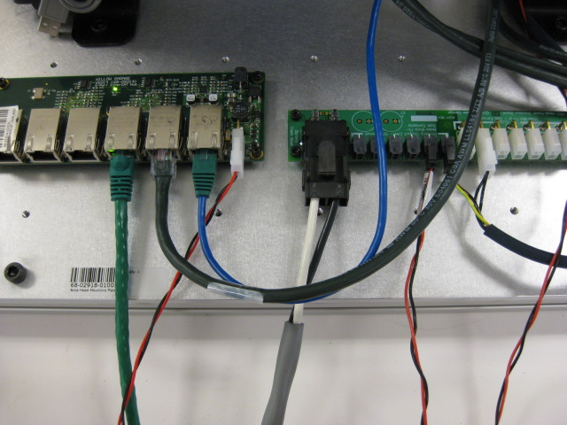
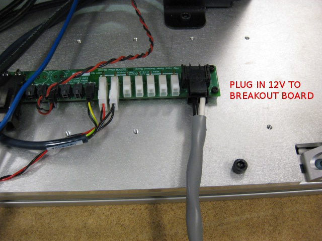
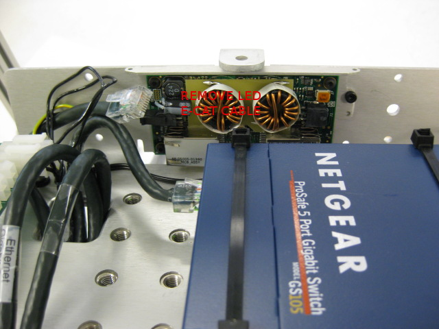

Install the head in the test fixture using four bolts. Plug in the 48V and 12V power cables into the appropriate slots on the power breakout board. Plug the test cart etherCAT into the left port of the WG014 EtherCAT hub, and the tilt/pan etherCAT cables in the other.
Plug in the 12V cable to the head breakout board.
Unplug the LED projector board etherCAT cable from the LED projector board as shown. The board will be tested and configured later.
All cameras and instruments must be removed before starting this test. The head will be dropped. Do not drop the head with instruments.
Press 'Continue' to proceed.